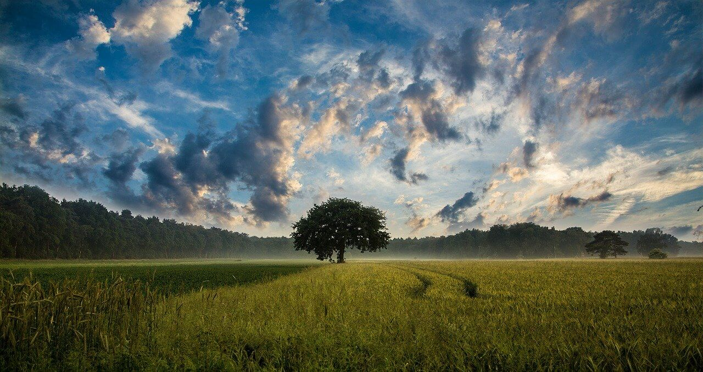

La fotografia panoramica permette all’osservatore di immergersi completamente nel paesaggio, racchiudendo in uno scatto una grande porzione della realtà che si ha davanti. La panoramica è una tecnica che veniva utilizzata già con la fotografia analogica, nonostante le difficoltà di allineamento dei vari scatti, ma con l’avvento del digitale la sua realizzazione si è senza dubbio semplificata. In questo articolo vedremo come scattare una fotografia panoramica sul campo e come unirla successivamente in Adobe Lightroom.Le tipologie sono in ordine di difficoltà, come si può immaginare. Infatti, una panoramica meno è ampia e più sarà facile da unire e lavorare in post-produzione mentre, viceversa, una panoramica da 360° richiederà un’attenzione e una tecnica più elevata. Come abbiamo detto all’inizio, una panoramica non è nient’altro che una serie di scatti, orizzontali o verticali, che verranno successivamente uniti ottenendo così una fotografia con un angolo di campo pazzesco. Il linea generale, è preferibile scattare una serie di fotografie verticali così da avere una maggiore profondità dell’immagine finale. Scattare in orizzontale, infatti, ci porterà ad avere un’immagine finale estremamente bassa e molto larga. Quindi il consiglio è di scattare verticalmente così da catturare una maggiore porzione del paesaggio che abbiamo davanti.
citta:torino